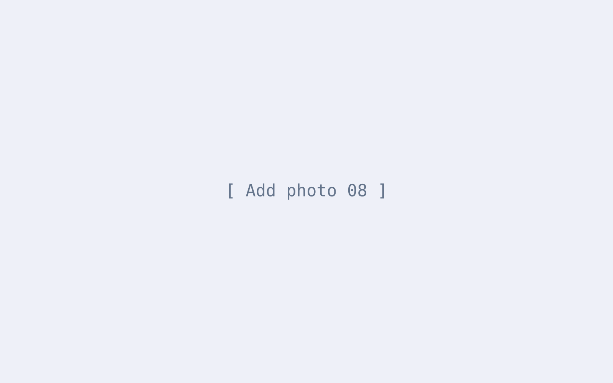
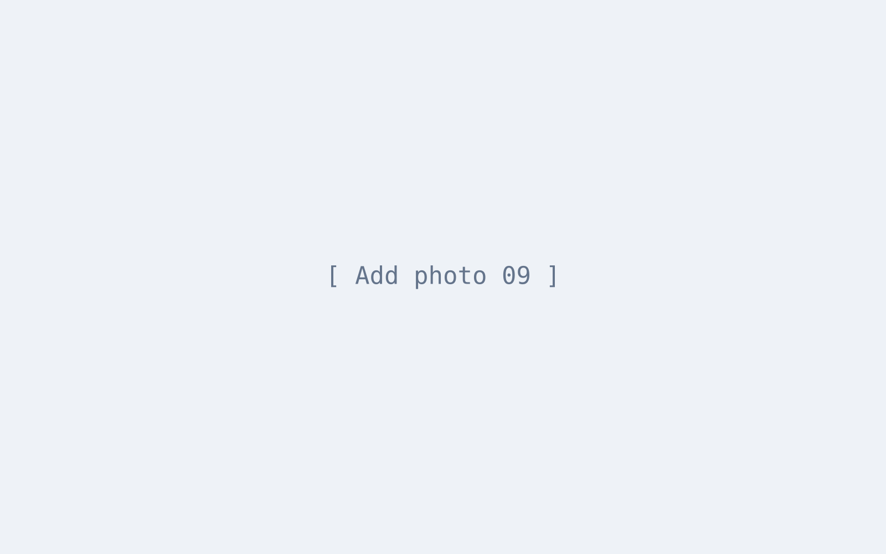

Manual Testing
FunctionalRegressionSmokeSanityUATExploratoryUI, form & CMSSTLC, Agile
I'm Md Jaker Ullah Chowdhury Nahin, an Associate QA Engineer at Skytech Solutions (Codezzi). I test web products, client websites, CMS panels and the REST APIs behind them — and automate the checks worth repeating.

I'm a QA engineer with a background in Computer Science, currently working as an Associate QA Engineer at Skytech Solutions (Codezzi). I test the company's web products, client websites and their CMS panels — functional, regression and smoke testing in the browser, and REST API testing in Postman against the Swagger docs.
I write test cases and bug reports developers can act on quickly, and I've started automating our repeated API checks with Python and Pytest. Before Codezzi, I tested a hospital ERP during my internship at Ignite Technology.
Functional, regression, smoke and sanity checks before every release.
Every endpoint checked against Swagger: fields, validation, tokens and errors.
Steps, expected vs actual results and screenshots — then a retest of every fix.
Turning repeated Postman checks into Python and Pytest suites.
The same steps I follow for every product, from first read of the requirement to the daily QA update.
Read the requirement, flows and Swagger docs.
Write test cases, including negative cases.
Functional, smoke, sanity and regression runs.
Postman checks against Swagger, plus Pytest.
Clear bug reports, then a retest of each fix.
A daily QA update to the team.
Skytech Solutions, Software Wing (Codezzi) · Dhaka
Ignite Technology · Dhaka
Products and websites I test at Skytech Solutions (Codezzi), plus my API automation project.
Python · Pytest · Requests · pytest-html
A Pytest suite for the SkyVAT REST API that replaces checks I was repeating by hand in Postman. It logs in once per run, shares one request client, reads settings from a .env file and produces an HTML report.
VAT and business management software
VAT and business management software. I tested its core business flows and checked that the VAT worked out on each transaction matches the forms, registers and returns built from it.
CRM and workforce management
A CRM and workforce management platform. I covered the workforce side — employee records, assignments, daily reports, attendance and leave — and the CRM side — campaigns, accounts and transactions.
SMS gateway
An SMS gateway for bulk, single, OTP and transactional messages. I tested the sending flows and customer accounts in the app, and the SMS APIs in Postman.
Bulk data processing
A bulk data processing tool. I verified imports and exports, the validation rules that guard them, and the background jobs that process the data.
Applicant tracking system
An applicant tracking system. I worked through the whole hiring flow and the email side, and suggested improvements along with my bug reports.
Ad campaign management
An AI-powered tool for building and managing Google Ads campaigns. I went through every step of the campaign builder for each campaign type and mode.
Four websites with CMS, plus a grant portal
Four websites — the foundation, eye hospital, nursing college and school — each with its own CMS, plus a Research Grant Portal.
Bangla/English website with CMS
A bilingual Bangla/English website for the Bangladesh Athletics Federation, with a portal and CMS behind it.
Company website with CMS
Codezzi's company website and the CMS behind it. I went through every public page and form, and checked each CMS change on the live site.
Bangladesh University of Business and Technology
Feni Computer Institute
Shaheen Academy School and College
 01 / 09
01 / 09




Email me about QA roles or testing work, or browse my code on GitHub.